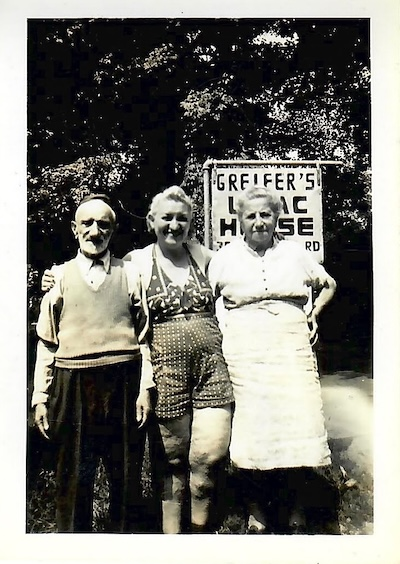

This biography for Arnold Faden was put together by his children based on conversations with him plus the family history collected by Vicki Faden Millar and other sources.
Our dad, Arnold Faden was born March 27, 1934, in the Bronx, New York City. He was the first child of Joseph and Sarah Faden (nee Spellun). His brother Robert was born February 7, 1942.
Dad's father Joseph Faden was born June 1, 1904, also in New York City. His parents Joel Faden (1861-1945) and Basze Bessie Faden (nee Spanaman) (1864-1940) immigrated to the US from Chorostkow, Galicia, then part of the Austrian empire. Joel arrived sometime in 1894 with his brothers, Sumer and Jacob Leib, leaving his wife and children behind. Basze arrived October 28, 1901, via Ellis Island on the ship Potsdam out of Rotterdam.
Basze's immigration form says that she was literate and would be joining her husband, Joel Faden.
Dad's mother Sarah Spellun was born February 15, 1902, in Kovel, then part of Russia. She immigrated to the US with her parents Israel Spellun (born 1877) and Rose Spellun (nee Tannenbaum) (1879-1941) and siblings via Quebec, Canada, March 14, 1903.
Chorostkow, now known as Khorostkiv, and Kovel both now lie in modern day Ukraine. The Jewish communities in both cities were devastated during the Holocaust. See CHOROSTKOW: Khorostkov, Ukraine (Archive) and Kowel; Testimony and Memorial Book of Our Destroyed Community (Kovel, Ukraine) (Archive).
Dad's first elementary school was PS-25, next door to his grandfather Joel Faden's house at 573 Union Avenue. Dad lived there with his parents and other relatives. Dad remembers hearing the school bell ring. Other memories: His grandparents would put carp in the bathtub to keep it fresh (alive). His grandpa once threw a dart at him for sassing him. Dad thinks it may have gotten stuck in his foot. The house was cold at night since his grandpa wouldn't heat it overnight to save money.

The 1930 Census, 4 years before Dad's birth, shows 5 residents, all Fadens, at the 573 Union Avenue house: Joel (then aged 64) and Bessie (aged 62) plus their children Jean (24), Joseph (22), and daughter Ray (20). It shows they owned the home and that it was valued at $14,500. It had a radio. It shows that Joel and Bessie immigrated to the US in 1893 and 1895, both from Austria, and that before coming to the US, they spoke Yiddish. It shows that neither Joel nor Bessie had yet been naturalized. Joel's occupation is "furrier" with "own shop" as industry. Jean's occupation is "artist" with "lamp shade" as industry. Joseph's is "collector" in "household articles". All three children are listed as single.

The 1920 Census shows the Spelluns renting a place at 559 Southern Boulevard, along with multiple other families. It says that Israel Spellun (aged 43) had immigrated in 1905, his wife Rose (aged 41), son Max (21), and daughters Mollie (19), Sarah (17), and Gussie (15) had followed in 1908. Their place of birth is listed as Russia, their mother tongue "Jewish". All were naturalized in 1916. Another daughter Eva (aged 9) was born in New York City. All could read and write and speak English. Israel's occupation is listed as "painter" in the "buildings" industry. Max's occupation was "bookkeeper" for an oil company. Mollie was also a bookkeeper but for a clothing company. Sarah, Dad's future mom, worked as a sales lady for a dry goods company. All the children are listed as being single.


Both his paternal and maternal grandparents would read the newspaper in Yiddish. He also remembered his mom's father Israel Spellun would go every day to the schul.


The 1940 Census shows Dad's father Joseph living away from the Union Avenue home, at 180 West 168 Street (rented). It says that the highest grade Joseph completed was "H1" (9th grade). It lists his occupation as "salesman", with "retail furniture co" as the industry. It says that he worked 52 weeks in 1939, earning $1200. It says that his monthly rent was $35. It says he was 35 in 1940. (So, we have three potential birth years for him: 1904, 1908, based on the 1930 Census, and 1905, based on the 1940 Census.)


BRONX SCIENCE BOYS WIN; Pair Get Medals and Team Trophy in N.Y.U. Contest
Two boys from the Bronx High School of Science have won medals for themselves and the team trophy for their school in the recent Interscholastic Mathematics Contest sponsored by Washington Square College, New York University.
Arnold Faden received the gold medal for top honors and Samuel Klein tied for third place and a bronze medal. Second prize went to Paul Cohen of Stuyvesant High School and Edward Posner of the same school tied for third prize.
Paul Cohen would go on to win the Fields Medal, one of highest honors in mathematics, in 1966 for proving that the continuum hypothesis is independent of set theory.
Training Wheels
Dad wasn't too steady on a bike himself
yawping in a sympathetic cadence to my wobble.
Tongue out, I swung the red frame side to side
reaching now the angle of repose
now the point of no return.Until, undulations decreasing,
momentum all with me now
I rushed toward the breathy world.
Each square of concrete a bumpy step leading
wherever I was going to go.Fast.
-- Teresa Alto, Migrations: Poetry & Prose for Life's Transitions (2011)
Dad got to know David Blackwell when Blackwell gave a talk to the Iowa State Statistics department. Dad asked a question and the two got to talking, leading eventually to an invitation for Dad to visit Berkeley.
Today Blackwell is honored on the Berkeley campus with a dorm building
named for him --
Blackwell Hall.


Nvidia also named a GPU for him.
In order to avoid potentially getting drafted for a longer period of time, Dad volunteered for the Air Force. A July 1958 photo shows him with his squadron in Texas.


Dad was stationed at Lackland Air Force Base. He considered the name ironic since land was the one thing it didn't lack.
He said, "Never did figure out how to get my cap to sit squarely on my head."
One time a sergeant bought him dinner. "Do you know what you just ate?" the sergeant said. The sergeant answered his own question: "Octopus!" He expected Dad to get sick, but Dad just said, "It was tasty."
He doesn't consider himself to be a veteran since he doesn't have at least two years of active service.